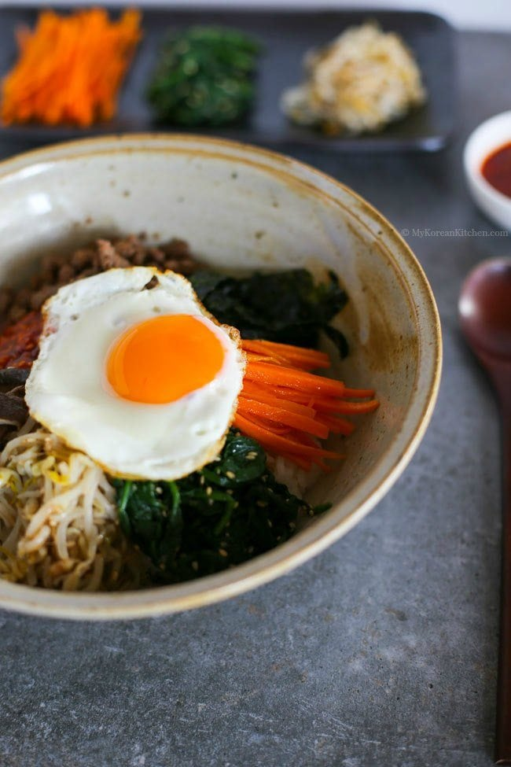

Bibimbap

Bibimbap is a perfect way to use those leftovers and make a delicious meal out of them
Ingredients for Bibimbap (3 to 4 Serving)
Meat and Meat Sauce
- 100g / 3.5oz ground meat of choice
- 1 Tbsp soy sauce
- 1 Tbsp sesame oil
- 1 tsp brown sugar
- 1/4 tsp minced garlic
Vegetables and others
- 250g (0.6 pounds) seasoned spinach
- 350g (0.8 pounds) seasoned bean sprouts – (You don’t have to use them up if you think it’s too much but I love having lots of vegetables on my bibimbap!)
- 100g (3.5 ounces) shiitake mushroom
- 120g (4.2 ounces) carrots (1 small)
- 1/2 tsp fine sea salt (1/4 tsp each will be used when cooking shiitake mushroom and carrots)
- 3 to 4 serving portions of steamed rice
- 3 or 4 eggs (depending on the serving portion)
- Some cooking oil to cook the meat, mushroom, carrots and eggs I used rice bran oil.
- Some toasted seasoned seaweed, shredded (long thin cut)
BIbimbap sauce
- 2 Tbsp gochujang
- 1 Tbsp sesame oil
- 1 Tbsp sugar – I used raw sugar
- 1 Tbsp water
- 1 Tbsp roasted sesame seeds
- 1 tsp vinegar – I used apple vinegar
- 1 tsp minced garlic
How to make Bibimbap